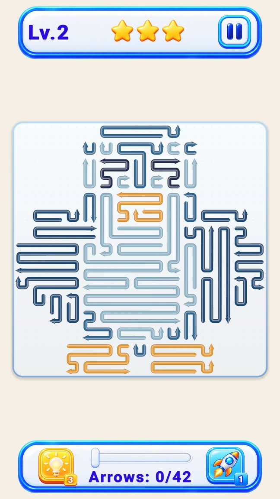
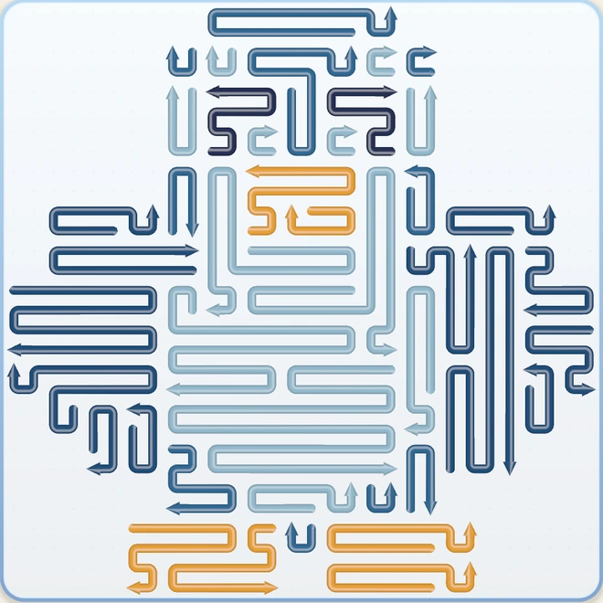

Shapes
Find the order hidden in a picture of bent arrows. Free a path and work through the silhouette, one choice at a time.
Penguin puzzle · native capture 13 Nov

Read the path. Find an opening. Explore three different ways to solve an arrow puzzle.
In development. Public release details are not confirmed.

One directional idea, three different decisions. These images are development snapshots, not new captures from this session.
Find the order hidden in a picture of bent arrows. Free a path and work through the silhouette, one choice at a time.
Penguin puzzle · native capture 13 Nov

Keep the arrows still and rotate the colored frame. An arrow needs a matching exit color as well as a clear path.
Matching frame · historical native snapshot 9 Nov

Open routes for arrows while enemies move around the board. The puzzle and the defense share the same decisions.
Defense board · historical native snapshot

A 20-second unedited Unity capture. The solver triggers the real game actions; the board and movement are rendered by the game. This source video is silent.
The previous edited Reel and icon concepts were rejected. They are not presented here as approved branding.
A public Google Play link and release date have not been verified. They will be added after release readiness is confirmed.
Shapes uses recognizable silhouettes, Color Shift adds matching exits and a rotating frame, and Defense combines directional arrows with enemies.
Yes. The imagery comes from native Unity development captures. Dates and source files are recorded. Some snapshots are historical and must be refreshed before release.
This local draft has no forms, analytics scripts, advertising tags, external fonts or account system. That describes this site only, not the game SDKs.
The verified current modes are Defense, Shapes and Color Shift. A separate Classic mode is not currently advertised.
A factual development press kit: game summary, mode descriptions, three source images and provenance. No made-up launch date, reviews or download counts.
Download the development press kitOfficial contact and social links will be added once verified.